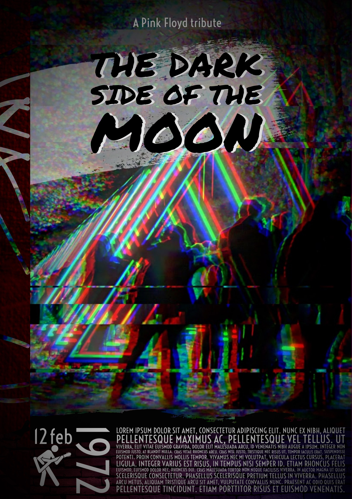
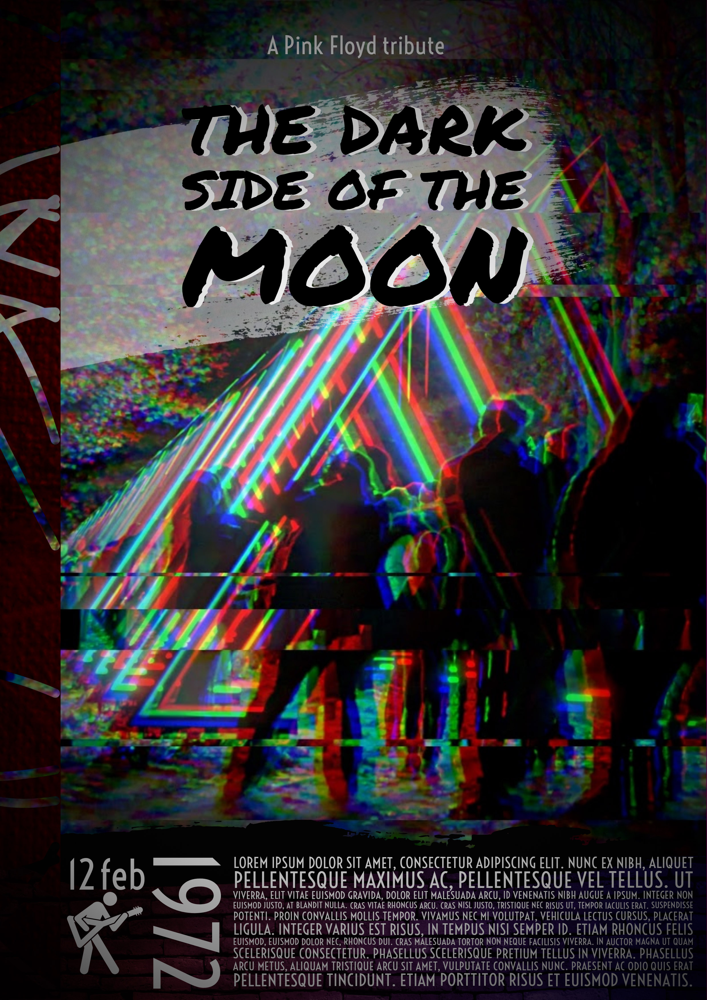

Started my career in Communication and PR, from event organization I ended up in the European Parliament in a few years.
During this period of time, I had the chance to meet with some great people, cultures and traditions – but truth to be told, I was always a tech savvy guy.
Technology and its potential fascinate me. I used to be that kid who repairs (or bricks) your laptop, installs custom ROM for your phone, mods or cleans your gaming console.
But all these developed my problem-solving skills, which I’m more than eager to use for creating new experiences, implementing eye pleasing designs and making them come to life.
For examples, please continue to browse my site, and if anything catches your eyes,
do me. I‚Äôll wait üòä
Album example
Something short and leading about the collection below—its contents, the creator, etc. Make it short and sweet, but not too short so folks don’t simply skip over it entirely.
Album example
Something short and leading about the collection below—its contents, the creator, etc. Make it short and sweet, but not too short so folks don’t simply skip over it entirely.
Album example
Something short and leading about the collection below—its contents, the creator, etc. Make it short and sweet, but not too short so folks don’t simply skip over it entirely.
Album example
Something short and leading about the collection below—its contents, the creator, etc. Make it short and sweet, but not too short so folks don’t simply skip over it entirely.
 
